Victoria Park Community Church — own section, print as objects
VPCC leaves More work and gets a full card, numbered 04, between Selhurst and Life Church Richmond. Its belt: website on the laptop, then the print pieces as the things they are on the street. Assumptions to check:
A-board: orange Welcome one side, cream Welcome the other (their chevrons point opposite ways, as on a pavement sign facing both directions).
Roller banner:Join us for church this Sunday, the woman’s photo.
General flyer:Join us (the man’s photo) on the front, We’re here map on the back. Guess: they’re the same size and read as invite then directions. Tell me if it’s a different pair.
Removed: the red All are welcome carol flyer.
Everything else (Hot cross buns, ESOL, logo, You’re invited) goes in one bento tile, as on Christian Heritage London.
The card Suggested
Flyer shown with option A below. Chosen. The A-board eases through each half turn (rests face on, swings fast side on), 14s a full turn; it and the flyer pause off screen and stand still for reduced motion. Roller banner stands still, front on.
04 / 06Visual identity, website and artworkvpcc.church
Victoria Park Community Church
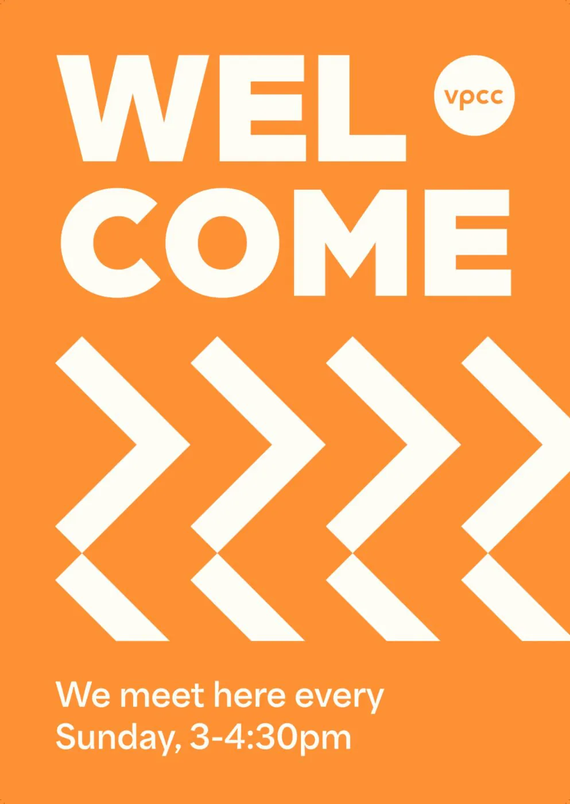
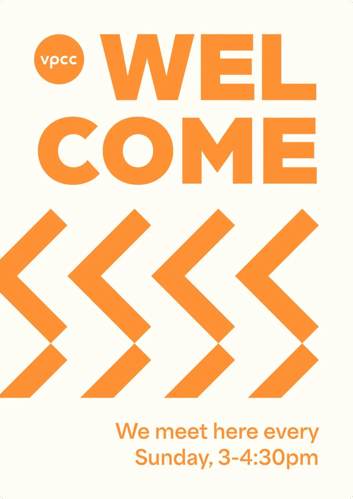
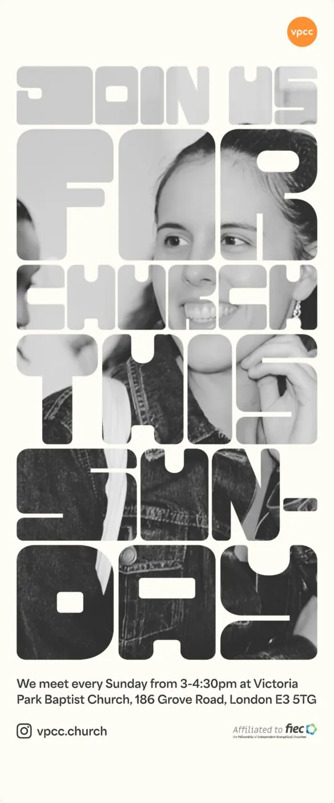
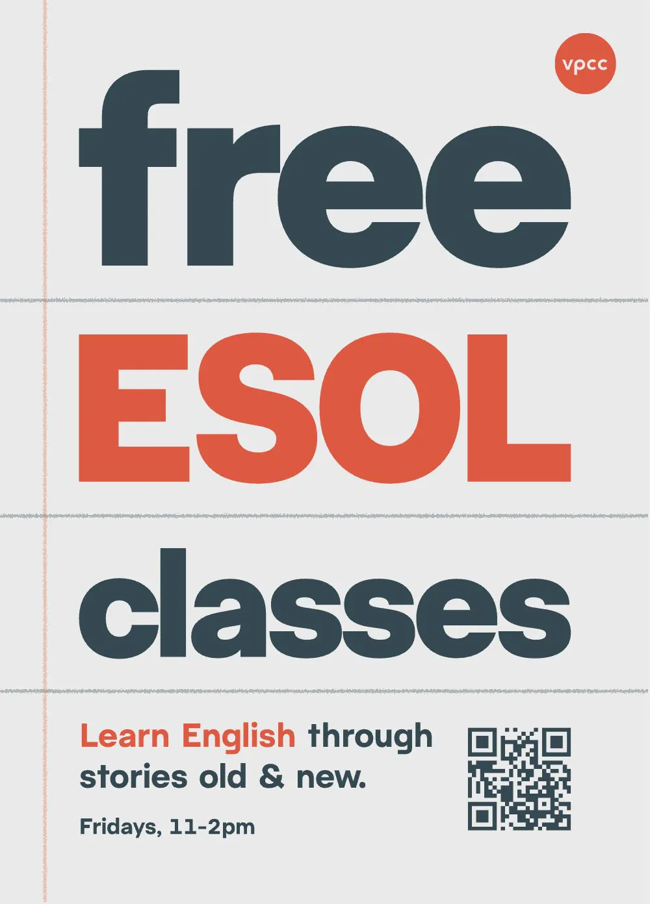
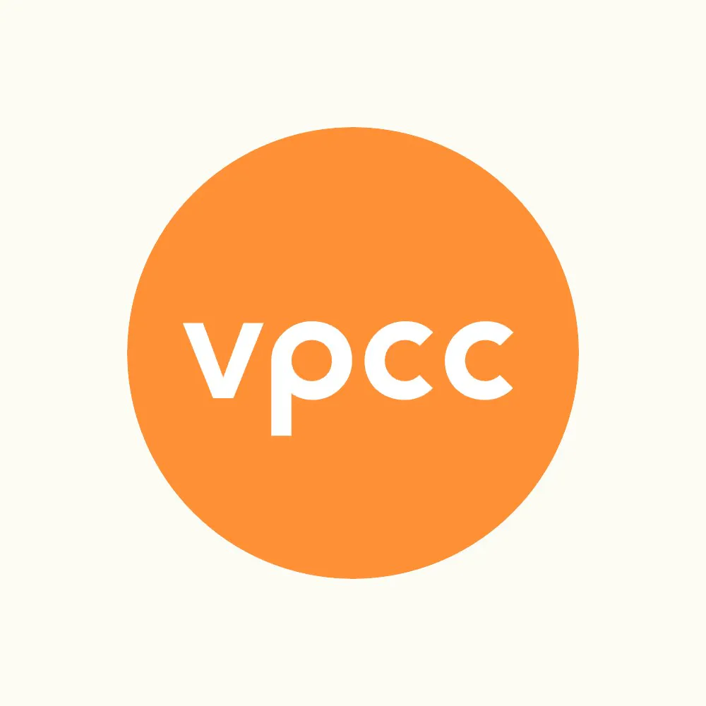
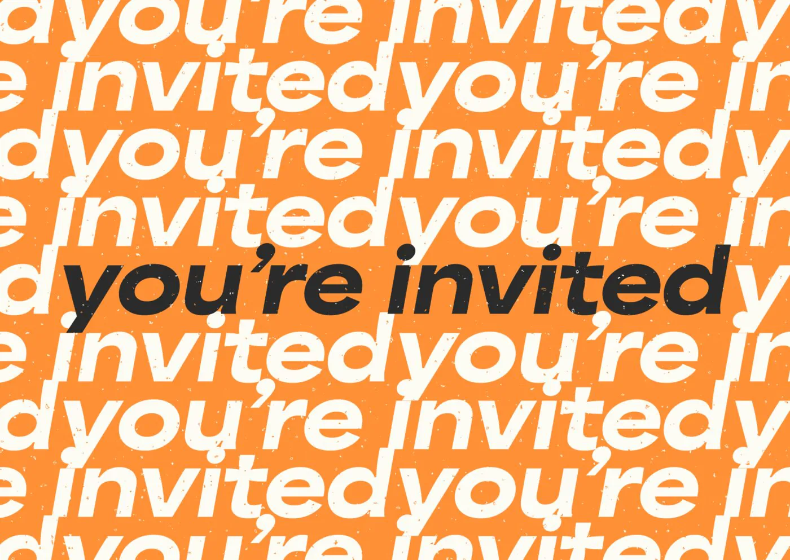
Life Church Richmond, same treatment
The everyone is welcome poster and the Lord’s Prayer become the two sides of an A-board; the pink and yellow banners stand side by side as roller banners, still. Plaque and logo sheet stay as flat pieces either end. Same parts as VPCC, so one A-board and one roller component serve both cards.
05 / 06Visual identityLogo, banners, signage
Life Church Richmond
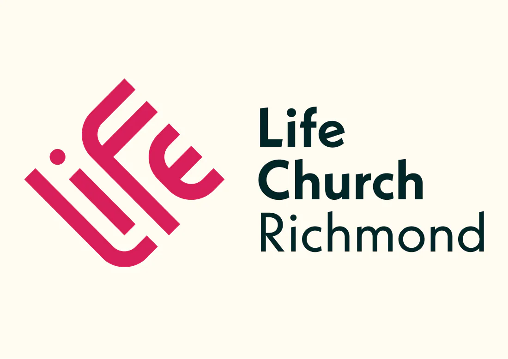
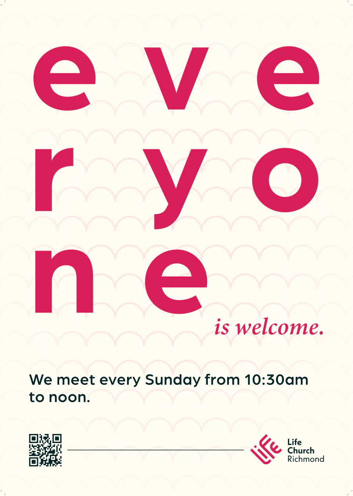
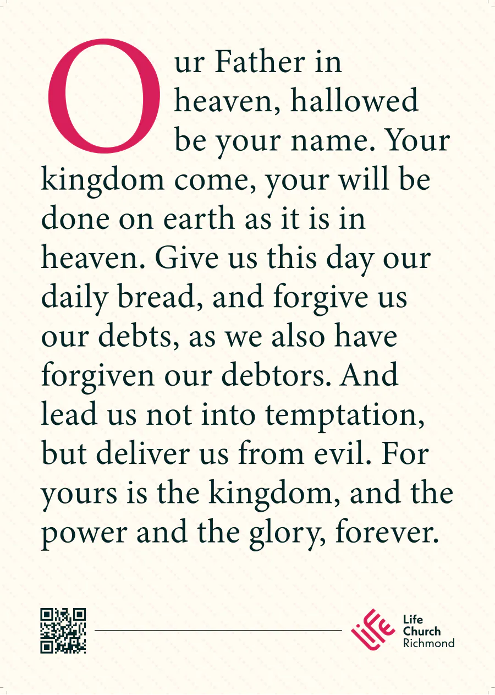
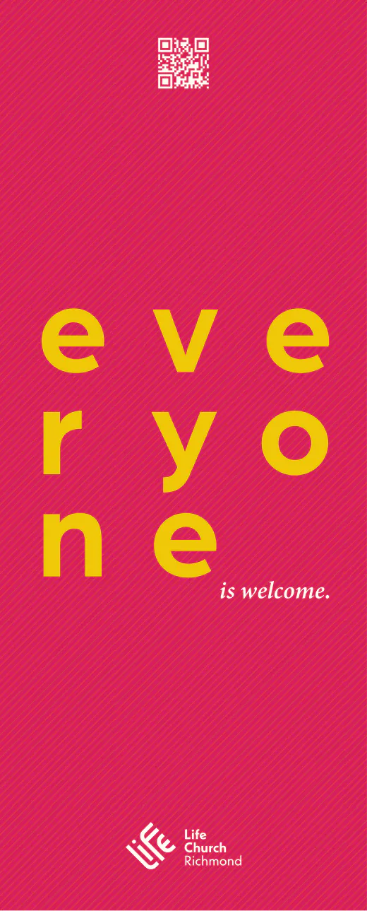
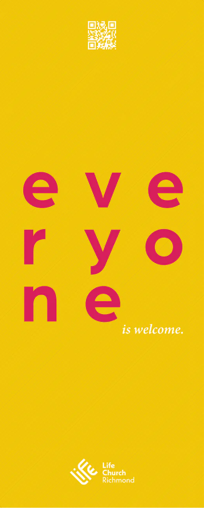
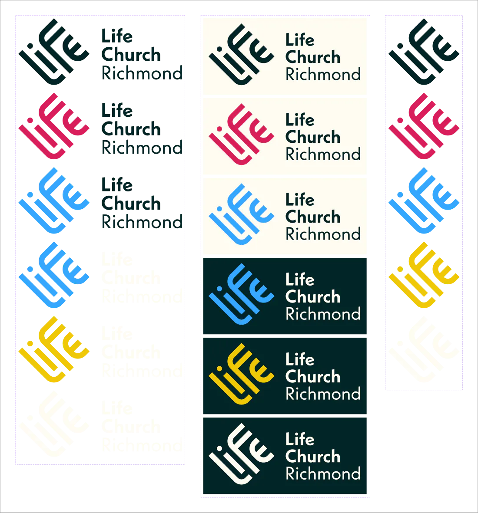
Flyer, front and back — three ways
A · Turns overSuggested — hangs at an angle and turns every 4 seconds while in view; hover or tap turns it at once. Both sides shown whole, works the same on phone.
B · Turned by the belt — scroll the strip: front on the way in, back on the way out. Cleverest, but on phones the belt snaps each item to the left edge, so it would mostly sit back-up.
C · On the table — both sides laid down at an angle like a print shot; hover lifts the top one. Calm, no motion, but each side is foreshortened and the back is half hidden.
A · Turns over
B · Turned by the belt (scroll sideways)
previous item
next item
C · On the table
Section order
VPCC slots in at 04; Life Church Richmond and Highbury move down one. More work keeps SPUC, Hope Church West End and AMT.